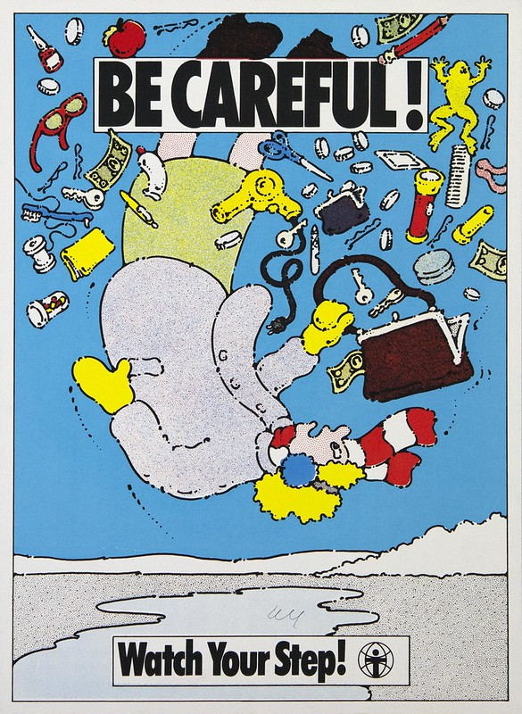

Think twice before using MRP-branded websites for tactical voting!

tl:dr If you want to vote tactically, use all available information and don't forget that other people can also do this.
What happened?
A company called focaldata did a MRP analysis of some online surveys and sold it to a group called Best for Britain, who are now using the MRP brand to promote their tactical voting website. Along the way I think some bad statistics communication happened.
I had some quick chats about this situation on Twitter with @dsquareddigest, @hmclandress and @JustinIbbet (founder and CEO of focaldata), then wrote up what I thought here.
I am interested because I am into multilevel regression and statistical communication, follow UK politics and also have a tangential connection with focaldata. About a year ago I did a job interview there and found them great. They pay people to do best-practice Bayesian statistics within a modern and professional software engineering setup, have some really cool data and generally come across very well.
What is tactical voting?
Tactical voting is when you vote for something you don't like because you think this will trick the voting system. In this context it means voting for a non-Brexit candidate who you do not support in order to prevent the Conservative candidate winning in your parliamentary constituency.
What is a MRP?
In this context, multilevel regression and post-stratification means making predictions about how different kinds of people in a sample vote (specifically using a multilevel regression model) and adjusting these predictions based on how many people of each kind you think there are in the population at large (this is called post-stratification).1
MRP is nice because, under the right conditions, it can make it possible to extrapolate from a sample population (e.g. the people who answer a survey) to a target population (e.g. people who vote on election day) and vice versa, even when the sample is non-representative. This is a relief because representative samples are pretty hard to make since people stopped using landlines.
What are some criteria for good statistical communication?
I agree with the advice in the last slide of David Spiegelhalter's talk here. In order to demonstrate trustworthiness, statistical analysis should be accessible (ideally it should be possible for someone interested to reproduce it), intelligible, usable (i.e. directly the model output should relate directly to what the communicee cares about) and assessable. Uncertainty should be confidently acknowledged and represented. Potential misunderstandings should be pre-empted. Careful thought should go into the relationship between the communicator and listener.
What went wrong in this case?
First, MRP is very sensitive to implementation details and there is no way for anyone to access or assess them. What kind of people were polled? What kind of effects did the model allow? What assumptions did the model make about what kind of people live where and who is likely to vote? No-one outside the loop can answer any of these questions. This is the biggest issue in my opinion - I can't see any good reason why the analysis couldn't be made fully reproducible.
The second problem is that, even without having any idea what kind of MRP analysis focaldata did, it was probably not the best possible prediction of the result on polling day. For one thing, it assumes that nothing will change between the survey dates (apparently these were done between September and October) and the election. In the previous election campaign the two big parties tended to do well at the expense of smaller parties. No-one knows how this campaign will go, but something will surely change, which means there is some uncertainty that the analysis probably isn't taking into account (I say probably as I can't be certain that they didn't do a dynamic MRP, but I think it's highly unlikely).
Another reason why focaldata's analysis isn't the best possible election prediction is that it likely (again there's no way to know for sure) does not include historical constituency results, even though these are quite informative as to the future results. This is the main criticism that has been made on Twitter and I think it is correct. For example, in Hendon the Libdem vote share in the last 3 elections has been between 4% and 12%, but the model apparently predicts 27% in this one. Obviously history is not destiny, but it is surely comparably relevant to survey data obtained three months before polling day and shouldn't be ignored completely.
These issues about prediciton aren't so much problems with the analysis itself but with its interpretation and presentation. As a summary of the information in the surveys I think the analysis would probably be fine, but this is not how Best for Britain want people to use it. In order to make a tactical voting decision you need the best possible prediction of the election result, and that's not what this analysis provides. In David Spiegelhalter's terms I think this qualifies as a problem of usability.
A third thing that went wrong is is that no attempt was made to share any uncertainty estimates, or indeed much model output beyond these hard-to-access-or-aggregate screenshots of some bar charts presumably representing point estimates. The advice seems to be very sensitive to small constituency-level Labour vs Libdem differences, which are probably highly uncertain in the model, with the uncertainty varying by constituency. There is no way of telling if the model result is 'the Libdems are definitely ahead of Labour by 2% here' or 'Labour and the Libdems are about the same, I honestly can't really tell who is ahead'.
Fourth, the method by which Best for Britain turned the MRP analysis into tactical voting advice is opaque - I couldn't find any explanation on the website, so again there is a problem of accessibility and assessibility. There is another problem though, which @dsquareddigest pointed out on Twitter. On its own an MRP analysis isn't enough to determine sound tactical voting advice.
In order to make a good tactical voting decision you need to know how other people are likely to tactically vote. Even if your best guess is that the Libdems are ahead of Labour in a constituency, it might be more tactical to vote Labour if for whatever reason you think other people are more likely to tactical-vote in this direction too. The 'tactical' scenario on the Best for Britain website seems to just transfer 30% of votes from all non-first-place Remain parties point estimates to the first-place one. If that is really how it works, I don't think it's very realistic.
This is not to say that tactical voters should ignore statistical analysis (provided it is done properly and communicated well), just that it isn't enough: you also need some information about the strategic situation.
Finally, though this isn't really my area of expertise, there seems to be a bit of a problem of responsibility. Focaldata know the most about the analysis, but they don't seem to appear on the website outside a footnote in some screenshots. Best for Britain seem to have been hoping that people would just trust that must have found someone good, that focaldata's reputation would speak for itself, or perhaps that the magic letters 'MRP' would satisfy everyone. For their part, focaldata don't seem to have made proper presentation of their work a condition for selling their analysis, which seems like a bit of a mistake now as that analysis is being used to give bad advice that it can't easily be disaggregated from.
So how should I vote tactically?
First you should use all available information about how people are likely to vote. This means a) waiting until the last possible moment - for most people this will be just before election day when YouGov will likely publish a more up-to-date and reproducible MRP analysis and b) also taking into account historical results from your constituency.
In addition, you also need to take into account that other people are going to vote tactically as well, and that most people who do so won't be relying on Best for Britain's website.